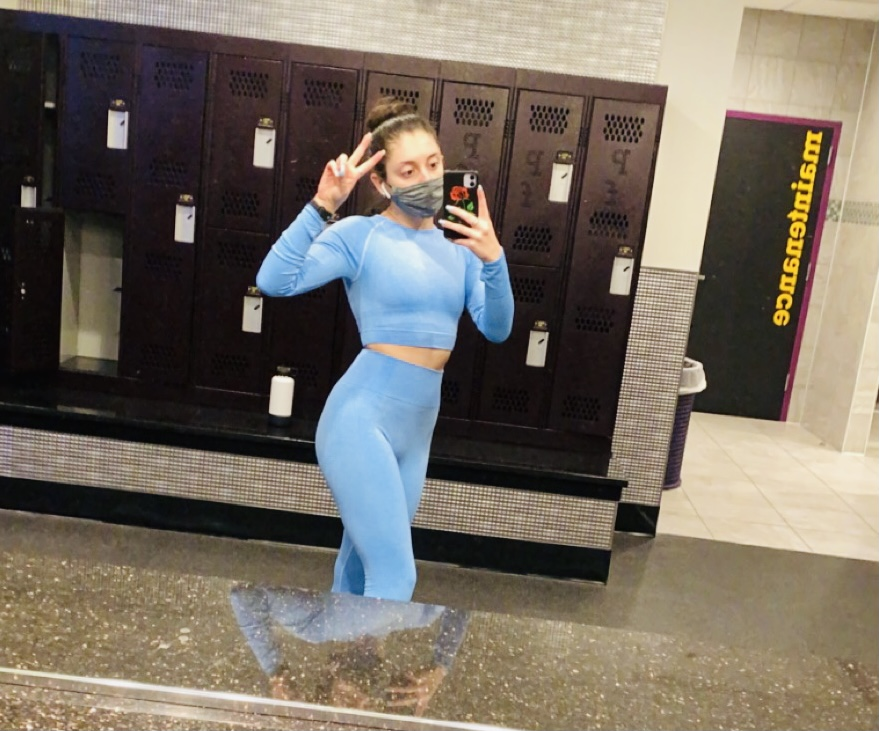
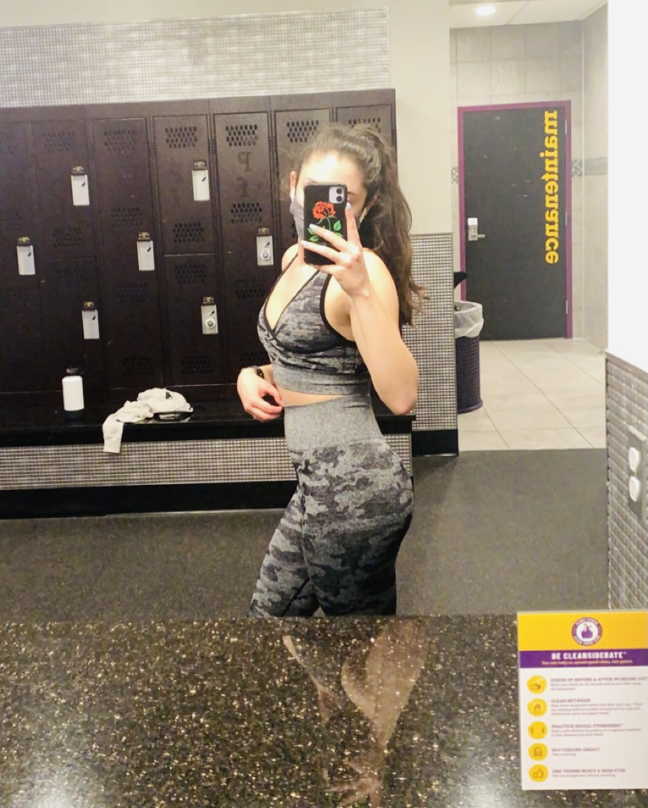

Living a healthy lifestyle is something that takes a lot of time and dedication. Making the decision to start living a healthier lifestyle has many benefits to the way you live your life! This blog is to inspire anyone who wants to try this new lifestyle and follow along on my journey!

My Story
When starting my fitness journey I really wanted to focus on myself and I wanted set goals for myself that weren't just for physiical changes but also for mental changes. I really wanted to better myself and feel good about myself as a whole. These past two years I've been dedicating more time to take care of myself whether that is eating better, being physically active, being more productive and not being sluggish, or just taking the time at the end of the day to do something for myself.
The fun thing about a health and wellness journey is taking the time to learn and try new things and figure out what really works for you! It was hard at first to stay consistent and push myself to do this, but now working out and eating healthy doesn't feel as much as a chore and I enjoy doing it. I now use the gym as a time to focus on myself and it's now a part of my self-care and something I do as a stress relief.
Learn to love the Journey
 